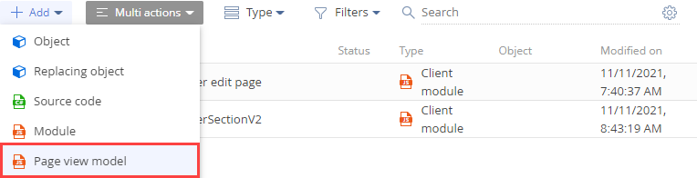

Страница записи — элемент интерфейса, который хранит информацию о бизнес-объектах приложения в виде полей, вкладок, деталей и дашбордов. Имя страницы записи соответствует имени объекта системы (например, страница контрагента, страница контакта и т. д.). Назначение страницы записи — работа с записями реестра раздела. Каждый раздел приложения содержит одну или несколько страниц записей.
Каждая страница записи представлена схемой клиентского модуля. Например, страница контакта сконфигурирована в схеме ContactPageV2 пакета UIv2. Функциональность базовой страницы записи реализована в схеме BasePageV2 пакета NUI. Все схемы страниц записи должны наследовать схему BasePageV2.
Виды страницы записи:
- Страница добавления записи — используется для создания записи реестра раздела.
- Страница редактирования записи — используется для редактирования существующей записи реестра раздела.
Контейнеры страницы записи
Элементы пользовательского интерфейса приложения, которые относятся к странице записи, размещены в соответствующих контейнерах. Контейнеры конфигурируются в базовой схеме страницы записи или схеме замещающей страницы записи. Не зависят от вида страницы записи.
Основные контейнеры страницы записи представлены на рисунке ниже.
- Контейнер кнопок действий (ActionButtonsContainer) — содержит кнопки действий страницы записи.
- Контейнер левой части страницы записи (LeftModulesContainer) — содержит основные поля ввода и редактирования данных.
- Контейнер панели действий (ActionDashboardContainer) — содержит панель действий и полосу стадий.
- Контейнер вкладок (TabsContainer) — содержит вкладки с полями ввода и редактирования, которые сгруппированы по признаку, например, месту работы.
Создать страницу записи
- Перейдите в раздел Конфигурация (Configuration) и выберите пользовательский пакет, в который будет добавлена схема.
-
На панели инструментов реестра раздела нажмите Добавить —> и выберите вид схемы модели представления.
-
Для создания новой страницы записи выберите Модель представления страницы (Page view model).
 -
Для замещения существующей страницы записи выберите Замещающая модель представления (Replacing view model).
/scr_add_replacing_module.png)
-
-
Заполните свойства схемы.
- Код (Code) — название схемы (обязательное свойство). Должно содержать префикс (по умолчанию Usr), указанный в системной настройке Префикс названия объекта (код SchemaNamePrefix).
- Заголовок (Title) — локализуемый заголовок схемы (обязательное свойство).
-
Родительский объект (Parent object) — выберите схему страницы записи, функциональность которой необходимо наследовать.
- Для создания новой страницы записи выберите "BasePageV2".
- Для замещения существующей страницы записи выберите схему страницы записи, которую планируется заместить. Например, чтобы в приложении отображалась пользовательская страница контрагента, выберите схему AccountPageV2 пакета UIv2.
- Реализуйте логику страницы записи.
- На панели инструментов дизайнера модуля нажмите Сохранить (Save).
Настроить страницу записи
Настройка страницы записи выполняется с помощью элементов управления.
Действия для настройки страницы записи, которые позволяет выполнять приложение:
- Добавлять стандартные элементы управления страницы.
- Изменять стандартные элементы управления страницы.
- Добавлять пользовательские элементы управления страницы.
Основные элементы управления страницы:
- Панель действий. Настройка панели действий страницы записи описана в статье Панель действий.
- Поле. Настройка полей страницы записи описана в статье Поле.
- Кнопка. Настройка кнопок страницы записи описана в статье Кнопка.
Добавить пользовательское действие на страницу записи
Creatio предоставляет возможность добавления пользовательского действия в выпадающее меню Действия (Actions) страницы записи, которое реализовано в схеме BasePageV2 базовой страницы записи.
Чтобы добавить пользовательское действие на страницу записи:
- Создайте страницу записи или замещающую страницу записи. Для создания страницы записи выполните шаги 1-3 инструкции по созданию страницы записи.
- Переопределите защищенный виртуальный метод getActions(), который возвращает перечень действий страницы. Перечень действий страницы является экземпляром класса Terrasoft.BaseViewModelCollection. Каждое действие — это модель представления.
- В метод addItem() в качестве параметра передайте сallback-метод getButtonMenuItem(). Метод addItem() добавляет в коллекцию пользовательское действие.
- В callback-метод getButtonMenuItem() в качестве параметра передайте конфигурационный объект. Метод getButtonMenuItem() создает экземпляр модели представления действия.
- Реализуйте конфигурационный объект действия, который позволяет явно задать свойства модели представления действий или использовать базовый механизм привязки.
Шаблон добавления пользовательского действия на страницу записи приведен ниже.